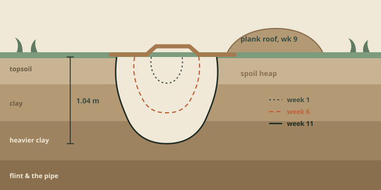

A început pe nouă martie, lucru pe care îl știm pentru că Ada i-a povestit mamei ei în mașină, iar mama ei ne-a scris ca să întrebe dacă există o groapă. Exista o groapă. Avea vreo douăzeci de centimetri adâncime și cam diametrul unei farfurii, și era în colțul curții unde iarba n-a crescut niciodată cum trebuie, din cauza stejarului.
Răspunzători erau patru copii: Ada și Bruno, de patru ani, și Wren și Otto, care tocmai împliniseră cinci. Aveau o lopățică și, mai târziu, o cazma adevărată, pe care Bruno a negociat-o de la mine cu condiția să-mi arate cum o ține. A ținut-o corect tot trimestrul.
În primele două săptămâni am făcut ce îmi imaginez că ar face majoritatea educatorilor: am urmărit cu coada ochiului și am așteptat să se termine. Săpatul e o pasiune de două zile. Nu e, din experiența mea, una de unsprezece săptămâni.

Ce s-a întâmplat, de fapt
Săptămâna a treia a fost lut, iar lutul a schimbat totul. Solul vegetal se desface în firimituri și nu ajunge nicăieri. Lutul se desprinde în plăci, ține forma și poate fi cărat. În două zile groapa încetase să fie o excavație și devenise o sursă de material, adică avea un scop dincolo de ea însăși, adică nu mai era plictisitoare.
Au făcut cam patruzeci de obiecte din lut în primăvara aceea. Cele mai multe erau bile. O minoritate importantă erau ceea ce Otto numea „cărămizi”, iar în săptămâna a cincea își dăduseră seama, complet fără ajutor, că o cărămidă uscată la soare e mai tare decât una uscată la umbră, pentru că le făcuseră pe amândouă și una supraviețuise când s-au așezat pe ea.
Treaba adulților nu era să predea asta. Treaba adulților era să nu aibă nevoie de colțul acela din curte pentru altceva.
Săptămâna a șasea a fost apă. Groapa s-a umplut după două zile de ploaie și nu s-a scurs, ceea ce a produs cel mai bun argument pe care l-am auzit de la un copil de patru ani. Poziția lui Bruno era că apa venise din cer. Poziția Adei era că apa venise din pământ, pentru că pământul era ud la fund înainte să plouă. Ada avea dreptate, avea dreptate pentru un motiv pe care îl putea explica, și n-a încetat să fie așa de atunci.
În săptămâna a noua au acoperit-o. Acesta a fost momentul în care am încetat să observ și am început să fiu de folos, pentru că acoperișul pe care îl voiau presupunea două scânduri mai grele decât Wren și pentru că o groapă acoperită într-o curte folosită de patruzeci de copii e cu totul altceva decât una deschisă. Am petrecut o dimineață la banc tăind scândurile la lungime și fixând două șipci transversale, și ne-am înțeles — cu voce tare, formal, de față cu toată lumea — că acoperișul se ridică în fiecare seară și că nimeni nu stă în groapă cu acoperișul pus.
În săptămâna a unsprezecea avea 1,04 metri adâncime. Apoi s-a terminat trimestrul și, cum se întâmplă cu lucrurile astea, s-au întors în septembrie și nu s-au mai atins de ea niciodată.
Ce am luat din asta
- Unsprezece săptămâni sunt disponibile. Presupuneam că plafonul unui interes pornit de copil e de vreo două săptămâni. Nu era; plafonul era răbdarea noastră, și ani de zile am confundat-o cu al lor.
- Interesul s-a adâncit când s-a schimbat materialul. Nimic din ce a spus un adult nu l-a susținut. Lutul l-a susținut. Acesta e un argument pentru curți care au mai mult de un singur lucru sub ele.
- Riscul a devenit mai ușor, nu mai greu, pe măsură ce a crescut. Acoperișul a fost cel mai periculos moment al întregului trimestru și tot atunci am avut cea mai limpede și mai calmă discuție cu copiii despre pericol — pentru că voiau acoperișul și, prin urmare, erau extrem de interesați de condiții.
- Era să oprim totul de două ori. O dată în săptămâna a doua, pentru că părea fără rost, și o dată în a șaptea, pentru că o mamă a întrebat, pe bună dreptate, dacă fiul ei mai face și altceva. Nu mai făcea altceva. Asta a fost, dacă stai să te gândești, în regulă.
Groapa e tot acolo. Are acum vreo treizeci de centimetri de frunze uscate în ea și o ferigă a prins rădăcină într-o margine. Am lăsat-o, parțial din sentimentalism și parțial pentru că e cel mai util lucru pe care îl putem arăta oamenilor într-o marți dimineața, când întreabă ce înțelegem prin „pornit de copil”.
Tomás Brandt conduce atelierele și școala de vară. E la Arcobaleno din 2016 și nu voia să scrie textul acesta.